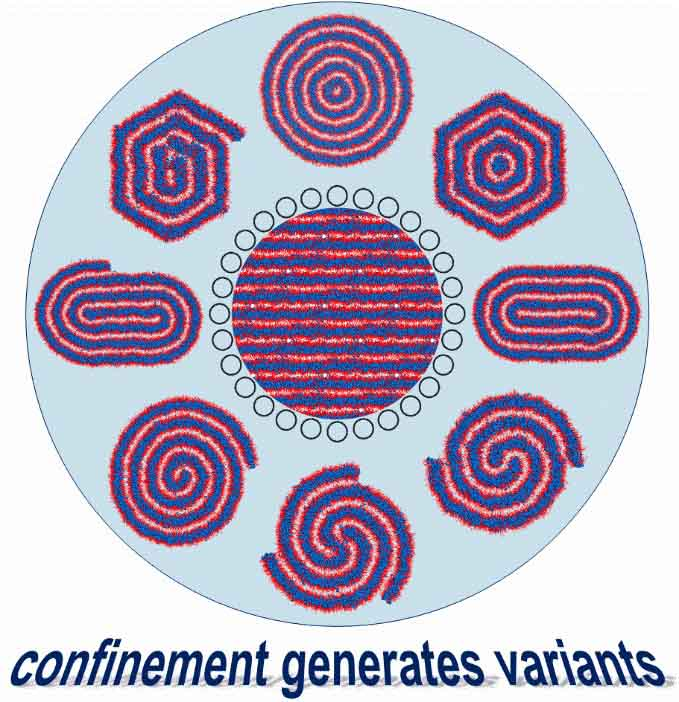
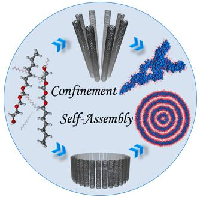

全部论文请查看:
Google Scholar: https://scholar.google.com.hk/citations?user=9_Z9kVsAAAAJ&hl=zh-CN
ResearchGate: https://www.researchgate.net/profile/Zhen-Li-144/research
- Zhen Li, Xiaohong Zhu, Jiawei Li, Jie Zhong, Jun Zhang*, and Jun Fan*. Molecular Insights into the Resistance of Phospholipid Heads to Membrane Penetration of Graphene Nanosheets. Nanoscale 2022, https://doi.org/10.1039/D1NR07684A (IF: 7.790，SCI二区TOP)
- Junfeng Wang, Jiawei Li, Yining Wang, Zhen Li*, and Jun Zhang*. Polymerization-Induced Self-Assembly of Comb-like Amphiphilic Copolymers into Onion-like Vesicles. Macromolecules 2021, 54(16): 7448-7459. (IF: 5.985，SCI一区TOP)
- Hanqing Lin, Ke Gong, Petr Hykys, Danke Chen, Wen Ying, Zdenek Sofer, Youguo Yan, Zhen Li*, and Xinsheng Peng*. Nanoconfined Deep Eutectic Solvent in Laminated MXene for Efficient CO2 Separation. Chem. Eng. J 2021, 405: 126961. (IF: 13.273，SCI一区TOP)
- Changxiong Huang, Xiaohong Zhu, Na Li, Xinyao Ma, Zhen Li*, and Jun Fan*. Simultaneous Sensing of Force and Current Signals to Recognize Proteinogenic Amino Acids at a Single-Molecule Level. J. Phys. Chem. Lett. 2021, 12(2): 793-799. (IF: 6.470，SCI二区TOP)
- Jiawei Li, Junfeng Wang, Qiang Yao, Tao Li, Youguo Yan, Zhen Li*, and Jun Zhang*. Why Synthetic Virus-like Nanoparticles Can Achieve Higher Cellular Uptake Efficiency? Nanoscale 2020, 12(27): 14911-14918. (IF: 7.790，SCI二区TOP)
- Zhen Li, Yonghui Zhang, Jiale Ma, Qiangqiang Meng, and Jun Fan*. Modelling Interactions between Liposomes and Hydrophobic Nanosheets. Small 2019, 15: 1904992. (封面文章，IF: 11.459，SCI一区TOP)
- Seung-Yeol Park, Jia-Shu Yang, Zhen Li, Pan Deng, Xiaohong Zhu, David Young, Maria Ericsson, Ruben LH Andringa, Adriaan J Minnaard, Chunmei Zhu, Fei Sun, D Branch Moody, Andrew J Morris, Jun Fan, and Victor W Hsu*. The Late Stage of COPI Vesicle Fission Requires Shorter Forms of Phosphatidic Acid and Diacylglycerol. Nat. Commun. 2019, 10: 3409. (IF: 12.121，SCI一区TOP)
- Yan Huang, Zhen Li, Zengxia Pei, Zhuoxin Liu, Hongfei Li, Minshen Zhu, Jun Fan*, Quanbin Dai, Mingdao Zhang, Liming Dai*, Chunyi Zhi*. Solid-State Rechargeable Zn//NiCo and Zn-Air Batteries with Ultralong Lifetime and High Capacity: The Role of a Sodium Polyacrylate Hydrogel Electrolyte. Adv. Energy Mater. 2018, 8: 1902288. (IF: 24.884，SCI一区TOP)
- Zhen Li, Yonghui Zhang, Chun Chan, Chunyi Zhi*, Xiaolin Cheng*, and Jun Fan*. Temperature-Dependent Lipid Extraction from Membranes by Boron Nitride Nanosheets. ACS Nano 2018, 12: 2764-2772. (IF: 13.903，SCI一区TOP)
- Zhen Li, Pan Wang, Yunyun Ma, Jun Zhang*, Caili Dai, Youguo Yan, Bing Liu. Tuning the Self-Assembly of Surfactants by the Confinement of Carbon Nanotube Arrays: A Cornucopia of Lamellar Phase Variants. Nanoscale 2015, 7: 6069-6074. (IF: 7.760，SCI一区TOP)
- Zhen Li, Pan Wang, Bing Liu, Yefei Wang, Jun Zhang*, Youguo Yan, Yunyun Ma. Unusual, Photo-induced Self-Assembly of Azobenzene-containing Amphiphiles. Soft Matter 2014, 10: 8758-8764. (IF: 4.029，SCI二区TOP)
- Zhen Li, Pan Wang, Youguo Yan, Run Wang, Jun Zhang*, Caili Dai*, and Songqing Hu. Tuning and Designing the Self-Assembly of Surfactants: The Magic of Carbon Nanotube Arrays. J. Phys. Chem. Lett. 2013, 4: 3962-3966. (IF: 6.687，SCI二区TOP)




